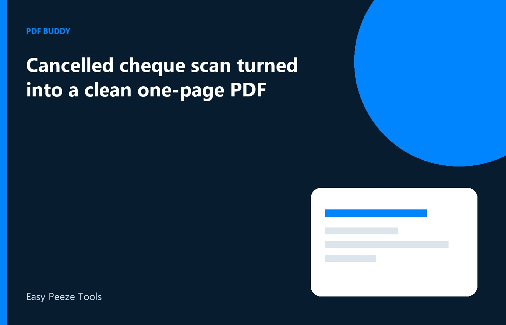

Banks, brokers, and employers still ask for a cancelled cheque when they need the account number, IFSC, and the name printed by the bank. The scan that arrives from a phone is often crooked, includes the whole passbook, or cuts off the MICR line. For a KYC form you are allowed to submit, make a single-page PDF of that cheque on Windows, check every digit, and upload only that page. Cancel the cheque the way your bank expects, usually with a pen line and the word cancelled, before you scan. Do not draw a new account number or paste another person's cheque into the page.
Start from the cheque you are allowed to send
Use a cheque from the account you are registering, in the name the KYC form already has. Write cancelled across it as your bank or the form instructs, without hiding the account number, IFSC, or the printed name. Then photograph or scan it flat, with the four corners visible and the long number along the bottom in the frame. Leave other cheques out of the picture. A second leaf in the same photo makes the reviewer wonder which account you meant. One cheque, one page, one account.
If the leaf is from an old book and the printed name is a previous spelling, do not cover it with a text box. Order a fresh cheque book or ask the branch for a proof they accept instead. KYC is a match between the form and the instrument. Editing the name on the image breaks that match and can be treated as a false document. Your job is a faithful copy of a cheque you hold, for a form you are permitted to file.
- Account printed by the bank, not typed over the image
- IFSC and branch line still visible
- The word cancelled does not hide those lines
- No second cheque in the same photo
Make it one page, not a collage
Crop to the cheque and a small margin. Do not include the table, your fingers, or a photo of the banking app beside it. Export a PDF with a single page. Many KYC slots reject a three-page file or an image that is still a JPG with a renamed extension. Open the PDF and zoom until you can read the account number without guessing a 5 from a 6. If a digit is soft, rescan under a lamp. Do not paint the digit darker by hand.
Rotate the page so the cheque reads left to right in the normal way. A sideways cheque is a common reject even when the photo was sharp. If the form also wants a passbook front page, that is a second file unless the instruction says to combine them. Keep the cheque PDF small enough for the slot after you have checked the digits. Compress only if Windows shows you are over the cap, then read the account number again.
Name the file so the KYC desk can see what it is
Save it as Cancelled-Cheque-YourBank.pdf or a similar plain name, without your full account number in the file name if the mail will pass through other people. The number belongs on the page, where the reviewer expects it. Avoid names like image1.pdf. If you must resubmit, add a version, not the word final twice. Put the file in a KYC folder on the PC next to the form acknowledgement. That folder is the one you will reopen if the desk asks again.
Some forms ask for the cheque and a bank letter in one upload. Follow that sentence only. If it says one file, put the cheque first and the letter second, both upright. If it says two uploads, do not merge. Preview the PDF on the PC before you switch to the browser. A last-minute merge on a phone is how blank pages and the wrong leaf get included. Check the account digits once more in that preview.
Send it only on the form that asked
Upload the PDF on the official KYC page or attach it to the employer's known process. Do not drop the same scan into a random website that offers to host KYC packs. The cheque shows a live account. Keep the local PDF until the account is verified, then store it with the rest of that application. Delete extra shots from the gallery so an old leaf is not picked up later.
If the reviewer says the image is unclear, send a new scan of the same cancelled cheque, not a different account, unless you are changing the account through the proper form. Do not sharpen numbers inside an editor. A clean second photo is the right fix. Pdf Buddy can turn the image into a one-page PDF, rotate it, and compress it on Windows after you have checked the print with your own eyes.
Questions people actually ask
Can I type the account number onto a blank cheque image? No. Submit a scan of the cheque the bank issued for the account you are registering, with the numbers the bank printed. Typing a new number, or borrowing a cheque image, is not a cleanup step. If the leaf is damaged, ask the bank for another leaf or for a letter they accept.
The KYC slot wants a PDF under a small size. What should I do? Crop to one cheque, export a single page, and compress only until the account number and IFSC are still easy to read. Check the size in Windows against the number on that slot. A blurry tiny file will be rejected after you thought the upload had worked.
Should the passbook photo sit on the same page? Keep the cheque as its own page. Add the passbook only when the instruction puts both in one file, and then as the next page, upright. Two documents squeezed into one photo are hard to read and often fail the preview.
Make the one-page cheque PDF on your PC, then upload it only on the KYC form that asked. Pdf Buddy, by Easy Peeze Tools, is a Windows desktop PDF editor that works on the PC. The scan is not uploaded to a random website. The free tier is 2 files a day. Pricing starts at ₹149. Get it from download.